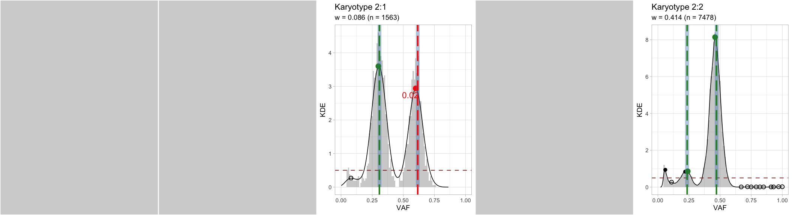

CNAqc can determine if purity and CNA segments “fit well” to mutation data, an hortogonal quality check (QC) metric that can be used to adjust purity/ ploidy.
CNAqc matches allelic imbalance of CNA segments to the allelic frequencies of somatic mutations. The package implements a karyotype-weighted linear score which uses the distance between data peaks (empirical), and their theoretical expectation. This score accouts for normal plodiy (germline), and tumour purity/ ploidy. The peaks are determined via kernel density estimation and peak-detection heuristics.
library(CNAqc)
#> ✓ Loading CNAqc, 'Copy Number Alteration quality check'. Support : <https://caravagn.github.io/CNAqc/>We work with the template dataset.
Peak detection routines can are implemented in function analyze_peaks.
The idea is as follows: a segment with \(m\) and \(M\) copies of the minor and major alleles is consistent to mutation data if the VAF distribution peaks at certain values, which we can compute. Profiling then of the VAF distribution with a peak-detection heuristic allows CNAqc to measure the if peaks match. Large deviance suggests usually wrong purity estimation.
# Run default analysis
x = analyze_peaks(x)
#> [ QC analysis with peaks detection ]
#> ── [ CNAqc ] n = 13141 mutations in 267 segments (267 clonal + 0 subclonal) ──────────────────────────────────────────
#> ℹ Purity: 89% ~ Ploidy: 4.
#> ℹ Mutation mapping (head): 7478 (2:2); 1893 (4:2); 1625 (3:2); 1563 (2:1); 312 (3:0); 81 (2:0)
#>
#> =-=-=-=-=-=-=-=-=-=-=-=-=-=-=-=-=-=-=-=-=-=-=-=-=-=-=-=-=-=-=-=-=-=-=-=-=-=-=-=-=-
#> Analysing ~ karyotypes 1:0, 1:1, 2:1, 2:0, 2:2 ~ 9041 mutations ~ min. k = 657
#> =-=-=-=-=-=-=-=-=-=-=-=-=-=-=-=-=-=-=-=-=-=-=-=-=-=-=-=-=-=-=-=-=-=-=-=-=-=-=-=-=-
#> # A tibble: 3 x 5
#> karyotype n n_proportion QC norm_prop
#> <chr> <int> <dbl> <lgl> <dbl>
#> 1 2:2 7478 0.569 TRUE 0.827
#> 2 2:1 1563 0.119 TRUE 0.173
#> 3 2:0 81 0.00616 FALSE NA
#>
#> Peak detector p = 0.89 ~ KDE a = 1 c = 0.5 ~ peakPick n = 1 epsilon = 0.015
#>
#> =-=-=-=-=-=-=-=-
#> Results table
#> =-=-=-=-=-=-=-=-
#> # A tibble: 4 x 10
#> mutation_multip… karyotype peak x y discarded offset matched weight
#> <dbl> <chr> <dbl> <dbl> <dbl> <lgl> <dbl> <lgl> <dbl>
#> 1 2 2:1 0.616 0.6 2.94 FALSE 0.0159 FALSE 0.0864
#> 2 1 2:1 0.308 0.3 3.6 FALSE 0.00796 TRUE 0.0864
#> 3 2 2:2 0.471 0.46 8.14 FALSE 0.0109 TRUE 0.414
#> 4 1 2:2 0.235 0.24 0.86 FALSE -0.00455 TRUE 0.414
#> # … with 1 more variable: score <dbl>
#>
#> Fit score: 0.00468956233367035
#> CNAqc analyze LOH regions (A, AA), diploid regions (AB), and amplification regions (AAB, AABB). These correspond to '1:1', '2:1', '2:0' and '2:2' in “Major:minor” notation. Karyotypes are subset by their size (normalized for the number of input mutations), and by default karyotypes smaller than 5% of the actual mutational burden are not considered
A Kernel-density method (unitary adjustment, Gaussian kernel) is used to smooth the data distribution, and the peakPick package to determine peaks in the smoothed density. Peaks below a mnimum density (noise and miscalled segments) are filtered, and the others are matched to a predefined location with some tolerance (e.g., plus/minus 0.5 * epsilon, where epsilon = 0.015 is the default).
Theis analysis produces a set of scores that account for karyotype size and peaks offset, and that can be combined into a linear model to compute an overall QC metrics, called rho.
print(x)
#> ── [ CNAqc ] n = 13141 mutations in 267 segments (267 clonal + 0 subclonal) ──────────────────────────────────────────
#> ℹ Purity: 89% ~ Ploidy: 4.
#> ℹ Mutation mapping (head): 7478 (2:2); 1893 (4:2); 1625 (3:2); 1563 (2:1); 312 (3:0); 81 (2:0)
#> ✓ QC via peak detection available, score: 0.00468956233367035.
#> # A tibble: 4 x 10
#> mutation_multip… karyotype peak x y discarded offset matched weight
#> <dbl> <chr> <dbl> <dbl> <dbl> <lgl> <dbl> <lgl> <dbl>
#> 1 2 2:1 0.616 0.6 2.94 FALSE 0.0159 FALSE 0.0864
#> 2 1 2:1 0.308 0.3 3.6 FALSE 0.00796 TRUE 0.0864
#> 3 2 2:2 0.471 0.46 8.14 FALSE 0.0109 TRUE 0.414
#> 4 1 2:2 0.235 0.24 0.86 FALSE -0.00455 TRUE 0.414
#> # … with 1 more variable: score <dbl>A summary table is stored inside the named list peaks_analysis.
Plotting results
For every karyotype, a plot with the estimated KDE and the matched peaks is available (assembled ggpubr figure with); gray panels represent karyotypes that have not been used.
plot_peaks_analysis(x)
#> Warning: Removed 2 rows containing missing values (geom_bar).
#> Warning: Removed 32 rows containing missing values (geom_path).
#> Warning: Removed 2 rows containing missing values (geom_bar).
#> Warning: Removed 13 rows containing missing values (geom_path).
Individual karyotypes plots are available inside the named lists peaks_analysis$plots, named afte each required karyotype.
# Tetraploid segments
x$peaks_analysis$plots$`2:2`
#> Warning: Removed 2 rows containing missing values (geom_bar).
#> Warning: Removed 13 rows containing missing values (geom_path).
You can integrate plots from QC analysis with data.
cowplot::plot_grid(
plot_peaks_analysis(x),
plot_segments(x),
rel_heights = c(.8, 1),
nrow = 2
)
#> Warning: Removed 2 rows containing missing values (geom_bar).
#> Warning: Removed 32 rows containing missing values (geom_path).
#> Warning: Removed 2 rows containing missing values (geom_bar).
#> Warning: Removed 13 rows containing missing values (geom_path).
#> Warning in plot_segments(x): Segments with CN above 8 will not be plot; this is
#> annotated in the figure.
#> Warning: Removed 10 rows containing missing values (geom_segment).
You can visually summarise the result of the QC analysis, which reports the peaks matched to data, the karyotype size (re-normalized for the karyotypes used) and the overall score.